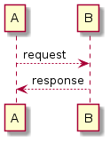
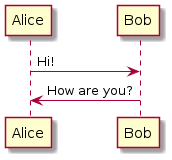
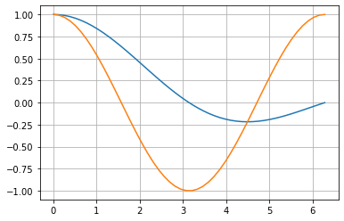

sampleを記述¶
Code¶
`` .. code-block:: `` を用いることでコードをハイライトすることができます。
hello.go¶
package main
import "fmt"
func main() {
fmt.Println("Hello, world!")
}
hello.cc¶
int main() {
std::cout << std::endl;
return 0;
}
PlantML¶


Math¶
\[ \begin{align}\begin{aligned}\sum_{n=1}^\infty \frac{1}{n^2} = \frac{\pi^2}{6}\\\begin{split}{a} = \begin{pmatrix} a_1 \\ a_2 \\ a_3 \end{pmatrix}\end{split}\end{aligned}\end{align} \]
Jupyter¶
import numpy as np
from matplotlib import pyplot
%matplotlib inline
x = np.linspace(1E-3, 2 * np.pi)
pyplot.plot(x, np.sin(x) / x)
pyplot.plot(x, np.cos(x))
pyplot.grid()
